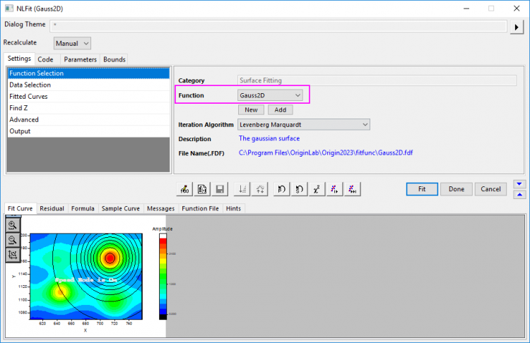
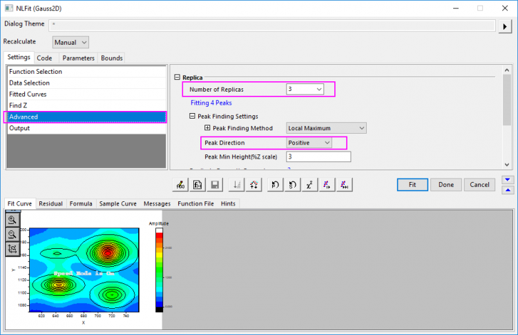
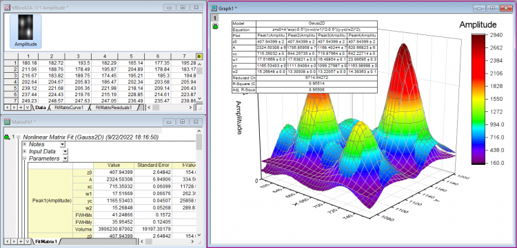

Oberflächenanpassung mit mehreren Peaks
SurfaceFit-MultiPeaks
Origin bietet mehrere standardmäßige Oberflächenanpassungsfunktionen in der Kategorie Oberflächenfunktionen, die zum Durchführen einer Anpassung auf 3D-Daten verwendet werden können. Die Oberflächenanpassungsfunktion ähnelt der nichtlinearen Anpassungsfunktion.
Oberflächenanpassungen sind nur in OriginPro verfügbar.
Origin-Version mind. erforderlich: 9.0 SR0
Was Sie lernen werden
- Eine Oberflächenanpassung für eine Oberfläche durchführen
- Die Oberfläche mit mehreren Peaks anpassen
Schritte
Dieses Tutorial ist mit dem Ordner Surface Fitting (nur Pro) im Projekt Tutorial Data.opj (<Origin-Verzeichnis>\Samples\Tutorial Data.opj) verbunden.
- Wählen Sie bei aktivem Matrixblatt Zeichnen > 3D: 3D-Oberfläche mit Farbabbildung, um ein 3D-Diagramm zu zeichnen.
- Lassen Sie das Diagrammfenster aktiviert und wählen Sie Analyse: Anpassen: Nichtlineare Oberflächenanpassung, um den Dialog NLFit aufzurufen. Bitte beachten Sie, wenn Sie die Anpassung von einem Matrixblatt ausgehend durchführen, dass Sie im Menü Analyse: Anpassen: Nichtlinearer Matrixfit... wählen.
- Wählen Sie Gauss2D in der Auswahlliste Funktion.
- 
- Gehen Sie zur Unterregisterkarte Erweitert, setzen Sie die Anzahl der Kopien auf 3 und die Peakrichtung auf Positiv. Sie können sehen, dass vier Peaks gefunden wurden.
- 
- Klicken Sie auf Fit, um eine Anpassung von mehreren Impulsen durchzuführen und ein Berichtsblatt mit den Anpassungsergebnissen zu erzeugen.
- 